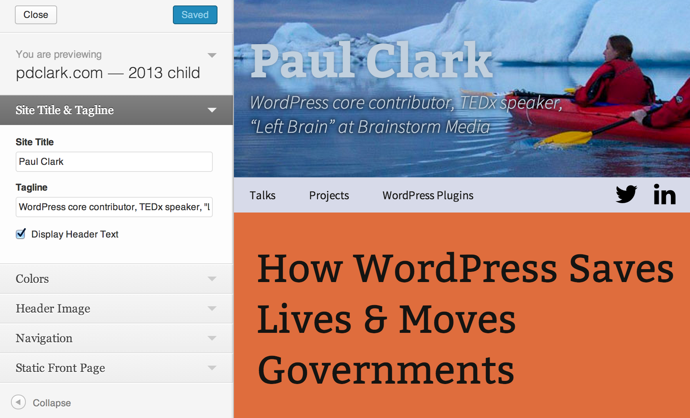
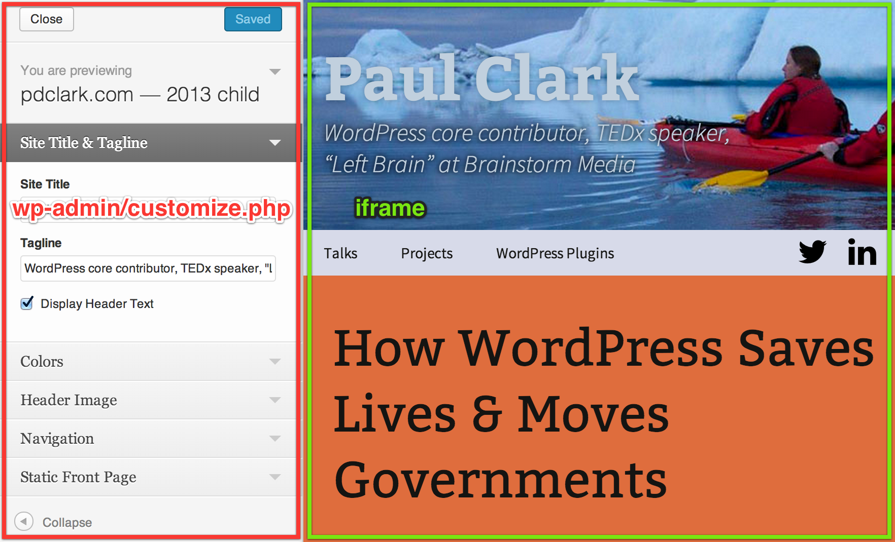
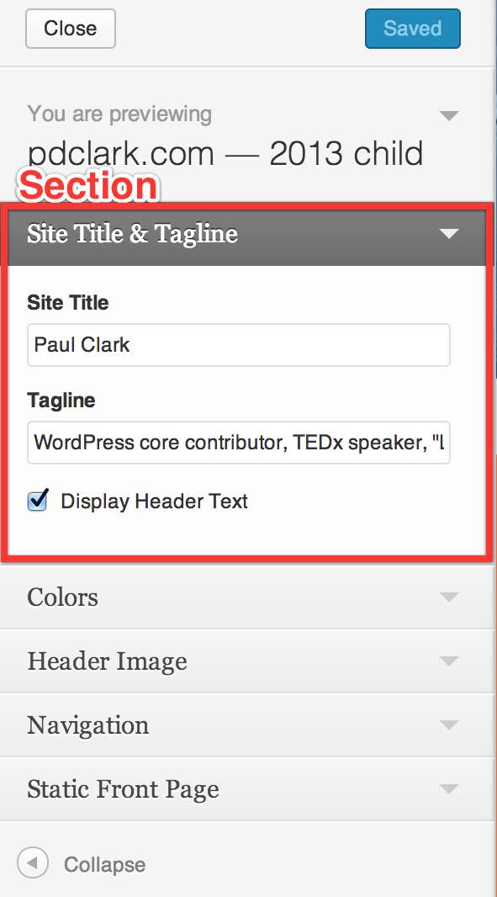
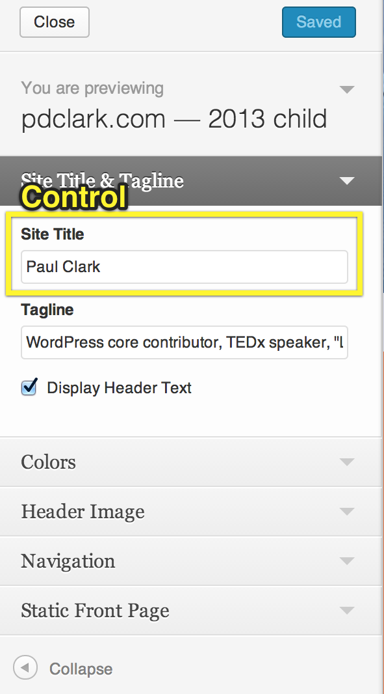
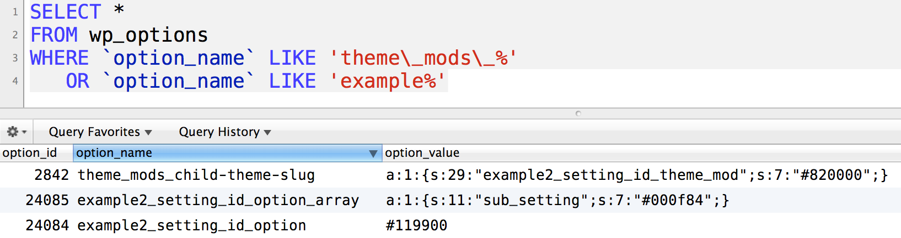

Brainstorm Media
- Clients like:
- The Wall Street Journal
- Iomega
- California Attorney General
- 7-person web agency specializing in WordPress
Paul Clark
- WordPress core contributor
- Developing WordPress sites since 2006 (~2.0.1)
- 10 plugins on WordPress.org, 20-something on Github
- Created Styles, a plugin that abstracts porttions of the WordPress Customizer API.
- Speaker at TEDxAnchorage and WordCamps in LA, Seattle, Portland, and Phoenix.
About the Customizer
Custawhat?


Custawhy?
- Live previews
- Standard interface
Reduced support because users don't learn a new interface for your theme
- Core API
Your theme grows with WordPress
- Code Reuse
Benefit from controls shared by core and other developers
- Extend with plugins
Custahow?
- Add a section
- Add a setting
- Add a control
- Use the setting value!
- Required skills:
- Advanced PHP & CSS
- Understanding of storing settings in
wp_options
- Alternative: Styles plugin
- Create color pickers and font pickers with CSS only.
Sections & Controls
Sections & Controls


Add a section
Add a setting
Add a control
Theme Mods vs. Options
Theme Mod
- Handles array of values for you.
- Scopes settings to your theme.
- Same data structure as Option (array), but with convenience function
get_theme_mod
- Think of them as invidivual options, not an array!
Option
- Single, generic setting.
- Typically better to use an array.
Option (array)
- Many settings in one
wp_options row.
- Think of it as an array, not serialized data!
- Basically the same as
theme_mod, but generic.
Data Structure
- Serialized data is preferred.
- Don't manually edit serialized data!
- Unless you *really* know what you're doing
- Don't think about the serialization!
- WordPress handles it for you.

Use the data!
Generated CSS
postMessage
Controls
Moar Controls
Styles
Thank You!